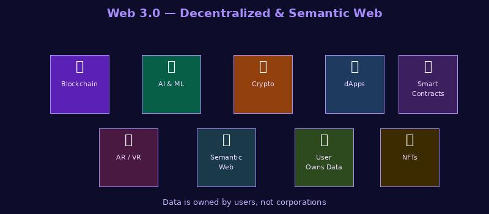

What is Web 3.0?

Web 3.0 (also called the Semantic Web) is the next evolution of the web, where data is linked and understood by machines in a more intelligent way. It aims to make information more connected and meaningful.
Web 3.0 also includes decentralized technologies like blockchain and artificial intelligence.
Key features:
- Semantic metadata (data about data, understood by machines)
- AI-powered search and personalization
- Decentralized protocols and blockchain technology
- Data ownership and privacy focused
- Examples: Siri, Google Knowledge Graph, some blockchain apps